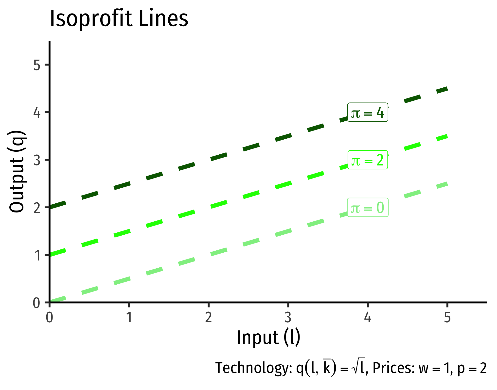
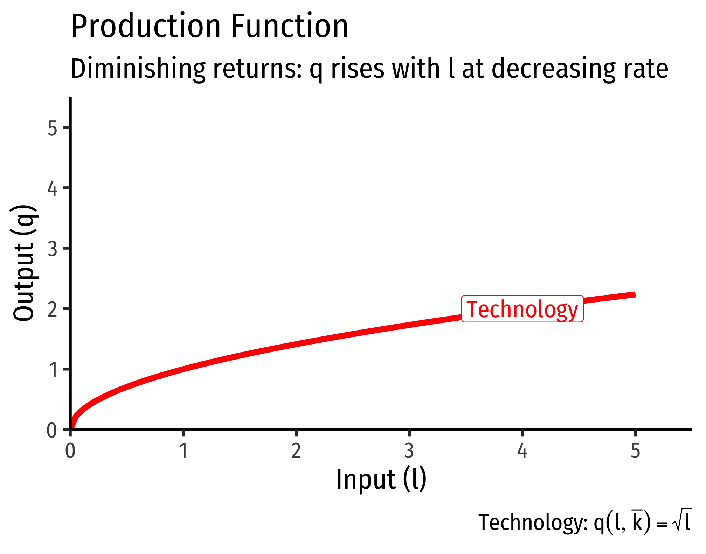
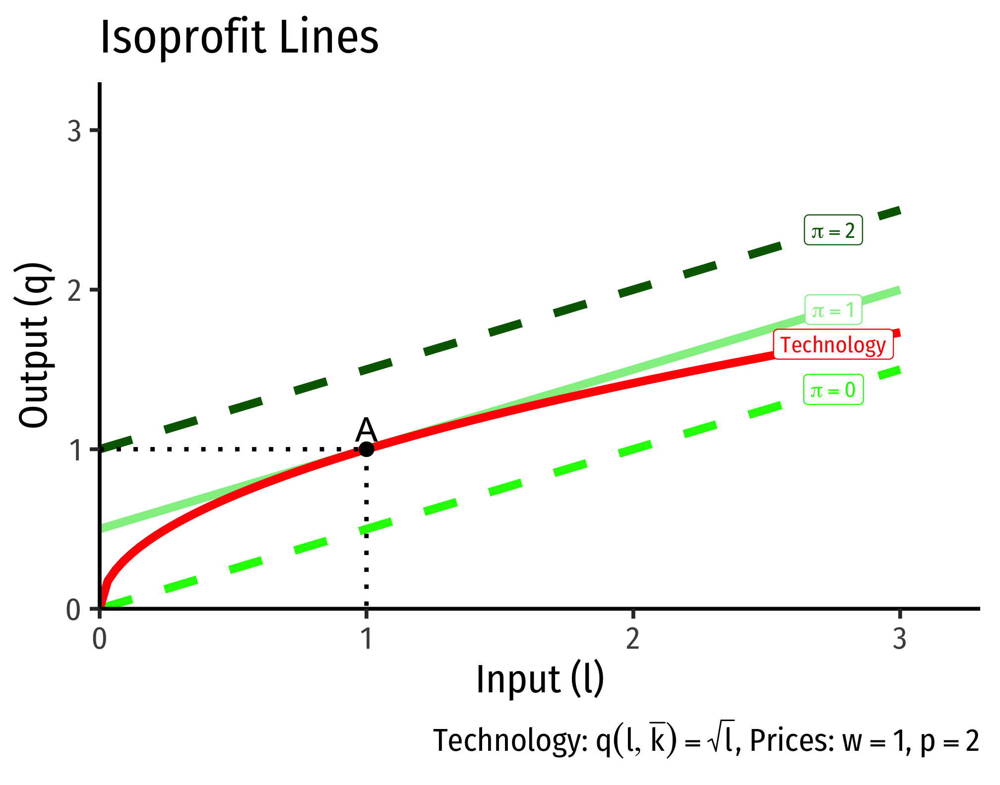
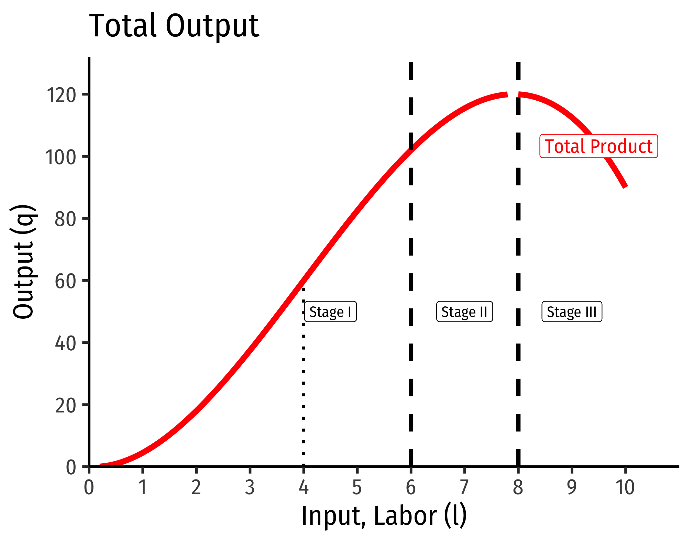
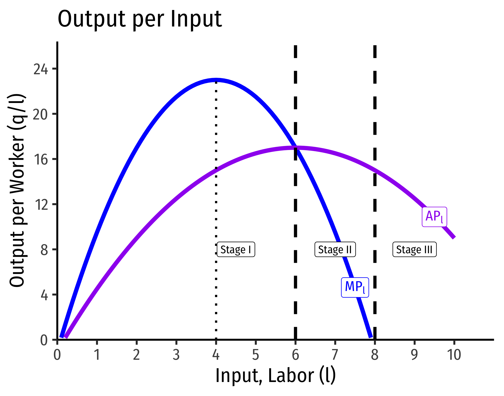

2.2 — Production Technology — Appendix
Derivation of MRTS Equation (as ratio of marginal products)
Consider a movement along an isoquant curve, how would this change affect output? There will be a change in \(l\) and a change in \(k\), and multiplying the marginal product of each, and adding these together will give us our total change in output. But we know that if we are on the same isoquant curve, moving along the curve will not change output (all points on the curve are defined as having the same output!). So rearrange the equation as follows:
\[\begin{align*} MP_l \Delta l+MP_k\Delta k&= \Delta q && \text{Measuring change in output} \\ MP_l \Delta l+MP_k\Delta k&=0 && \text{But change in output is 0}\\ MP_k \Delta k&= -MP_{l} \Delta l && \text{Subtracting l terms}\\ \underbrace{\frac{\Delta k}{\Delta l}}_{MRTS} &= -\frac{MP_{l}}{MP_{k}} && \text{Dividing to get like terms on each side}\\ \end{align*}\]
Notice rise over run, \(\frac{\Delta k}{\Delta l}\), is the slope, which we have defined as the marginal rate of technical substitution (MRTS). \(\blacksquare\)
Solving the Firm’s Problem in One Step
Traditionally, it is easier if we break the firm’s profit maximization problem into two stages:
- The firm’s profit maximization problem:
- Choose: \(<\) Output: \(q\) \(>\)
- To Maximize: \(<\) Profit: \(\pi=pq-C(q)\) \(>\)
- written mathematically: \[\max_{q \geq 0}pq-C(q)\]
- The firm’s cost minimization problem:
- Choose: \(<\) Inputs: \(l,k\) \(>\)
- To Minimize: \(<\) Total cost: \(C(q)=wl+rk\) \(>\)
- Subject to: \(<\) Producing optimal output: \(q^*=f(k,l)\) \(>\)
- written mathematically: \[\min_{l,k \geq 0}pq-C(q)\] \[s.t. y^*=f(k,l)\]
We proceed in class with the second stage first, and then the first stage. However, this appendix shows that the problem can be solved in a single stage. For simplicity, we look at the short run, where there is a single input \(l\) that can be chosen \((\bar{k}\) is fixed).
The firm’s profit maximization problem:
- Choose: \(<\) Input and Output: \(l,q\) \(>\)
- To Maximize: \(<\) Profit: \(\pi=pq-wl\) \(>\)
- Subject to: \(<\) Technology: \(q=f(\bar{k},l)\) \(>\)
- Written mathematically: \[\max_{l,q \geq 0}pq-wl\] \[s.t. q=f(\bar{k},l)\]
Objective: Maximize Profits
The objective function is trying to maximize profits. So we need to think about different levels (“contour lines”) of profit that correspond to combinations of input and output (at constant prices).1
A firm earns profits (\(\pi\)) as revenues minus costs: \[\pi=pq-wl\] Where - \(q\): quantity of output - \(p\): price of output - \(w\): price of input (wage) - \(l\): quantity of input (labor)
Imagine different amounts of input and output that would generate the same profit. We can think of an isoprofit line as having the equation above.
However, it’s easier if we graph it as output in terms of input (our two axes for drawing the production function): \[\begin{align*} \pi &=pq-wl\\ \pi+wl&=pq\\ \frac{\pi}{p}+\frac{w}{p}l&=q\\ \end{align*}\]

For these example isoprofit lines, since the price of our input \((w)\) is $1, and the price of output \((p)\) is $2, the slope of each of the isoprofit lines is positive \(0.5\).
Constraint: Technology
The constraint is what is technologically feasible for the firm to produce, according to its production function. We need to make a few assumptions about production functions in order to get an optimum solution:
- \(q>0\): firms always produce a positive amount
- \(\frac{dq}{d l}>0\): The more inputs used, the more output produced (the marginal product, i.e. the slope of production function, i.e. it’s first derivative, is positive)
- \(\frac{d^2q}{d l^2}<0\): Diminishing marginal productivity (production increases at a decreasing rate, i.e. the second derivative of the production function is negative)
These assumptions generate decreasing returns to scale in production: doubling input produces less than double output. These assumptions give us a mathematically-easy answer to find, but not all production fits these assumptions. A production function that fits these assumptions would look like this:

Solving the Problem
Essentially, we are trying to find the highest profit line tangent to our production function:

At a tangency, the slopes of the two functions are equal. The slope of the isoprofit lines we know are \(\frac{w}{p}\). The slope of the production function is the marginal product (of labor). So at the point of tangency: \[\begin{align*} \text{Slope of production function} &= \text{Slope of Isoprofit line}\\ \mathbf{MP_l}&\mathbf{=\frac{w}{p}}\\ \end{align*}\]
The Firm’s Supply and Demand Functions
The Geometry of Short-Run Production
This appendix explores the geometry of production functions in the short run. From the common law of diminishing returns (sometimes called “the law of variable proportions”), with constant technology, increasing the use of one factor (e.g. \(l)\), holding other factors constant (e.g. \(\bar{k})\), will ultimately experience diminishing returns. We often break up short-run production into three stages, based on the type of returns to increasing the use of one factor: increasing, decreasing, and negative.


I. Increasing Returns
In Stage I, labor experiences increasing returns. Both the marginal and the average product of labor are positive and (mostly) increasing. That is to say, output is increasing at an increasing rate when more labor is added, and the productivity per worker increases. For the example above, Stage I occurs over the range of 0-6 workers.
Intuitively, increasing returns means that output increases at an increasing rate. This is not the same, but you can think of this almost like exponential growth – just by adding a few more units of input we can get massive amounts of output. If this held forever, we could grow the entire world’s supply of food in a single flower pot!
Note that at 4 workers, marginal product reaches a maximum. Beyond this point, marginal product remains positive but begins to decrease. Looking at the production function, at 4 workers, the production function is at an inflection point. After 4 workers, the production function continues to increase, but now at a decreasing rate.
Geometrically, what this means is that between 0-4 workers, the production function is convex (a line connecting two points is above the function), between 4-6 workers, the production function is concave (a line connecting two points is below the function), the inflection point at 4 is where it switches between convex and concave.
Stage I ends not at 4 laborers, where marginal product is maximized, but at 6 workers, where the marginal product and average product intersect (are equal).
In practice, most firms breeze through Stage I very quickly. Naturally, if firms can boost output a lot, and cheaply, just by adding a worker or two, they will keep hiring workers and hiring workers…
II. Decreasing Returns
In Stage II, labor experiences diminishing returns. As we discussed with the law of diminishing returns, this will eventually happen to all factors of production if you keep adding them (holding other factors constant). Now, output is increasing, but at a decreasing rate. Adding more workers will increase output, but by progressively less and less, and each worker also is less productive on average, since both average and marginal product is declining (though total product is increasing). For the example above, Stage II occurs over the range of 6-8 workers.
Stage II ends at 8 workers, where the marginal product falls to zero.
In practice, most firms operate in Stage II, so this range is sometimes called the ``economic region’’ of short run production. We have seen that it is in the interest of a firm to keep adding labor during Stage I. We will next see that it is disadvantageous for a firm to keep adding labor beyond Stage II. Hence, the optimal amount of labor is often somewhere in Stage II.
III. Negative Returns
In Stage III, labor experiences negative returns, that is, adding labor actually decreases output! Here we have the “too many cooks in the kitchen” phenomenon. For the example above, Stage III happens when the firm is using 8 or more workers. We can see that the marginal product is negative, and average product continues to decline, as does output.
Recall diminishing returns implies that we are adding labor but holding all other factors (e.g. capital) constant. It is possible to increase the number of workers beyond 8 and still increase output, but that would require an increase in capital. If we do not increase capital, then by continually adding labor we will eventually hit diminishing (and negative) returns.
| Stage | Output | \(MP_l\) | \(AP_l\) |
|---|---|---|---|
| I | \(\uparrow\) at \(\uparrow\) rate, then \(\uparrow\) at \(\downarrow\) rate | \(\uparrow\), then \(\downarrow\) | \(\uparrow\) |
| II | \(\uparrow\) at \(\downarrow\) rate | \(\downarrow\) | \(\downarrow\) |
| III | \(\downarrow\) | Negative | \(\downarrow\) |
The Relationship Between Marginal and Average
There is a consistent relationship between any marginal magnitude and any average magnitude. We will see this when we talk about production, about costs, revenues, profits, etc.
When the marginal is greater than the average, the average is increasing because the marginal “pulls up” the average. When the marginal is less than the average, the average is decreasing because the marginal “pulls down” the average. Therefore, average is neither increasing nor decreasing (reaches a maximum/minimum) when the marginal equals the average.
Think of your grades or your GPA. Suppose your average is a B, and you get back a (marginal) grade that is an A. Since the marginal is higher than the average, this pulls up your average. Suppose instead you get back a (marginal) grade that is a C. Since the marginal is lower than the average, this pulls down your average.
| Case | \(AP_l\) |
|---|---|
| \(MP_l > AP_l\) | \(\uparrow\) |
| \(MP_l = AP_l\) | Maximized |
| \(MP_l < AP_l\) | \(\downarrow\) |
Look at the lower panel of the figure above and you can see, in Stage I, \(MP_l>AP_l\) and thus \(AP_l\) is increasing. The transition to Stage II occurs where \(MP_l=AP_l\) and thus \(AP_l\) reaches its maximum. In Stage III, \(MP_l<AP_l\) and thus \(AP_l\) is falling.
If these graphs looks vaguely familiar, cost curves (total cost, marginal cost, average cost) are monetized reciprocals of product curves (total product, marginal product, average product). Here is a proof (that will make sense a few lessons from now):
\[MC(q) = \frac{ \partial VC(q)}{\partial q} = w \frac{\partial l}{\partial q}= w \frac{1}{MP_l}\]
\[ AVC(q) = \frac{ \partial VC}{\partial q} = w \frac{l}{q}= w \frac{1}{AP_l} \]
Elasticity of Substitution
How easy is it to substitute between labor and capital (or any inputs)? Along a single isoquant, the rate of technical substitution (MRTS) will diminish as we move to the right (more labor, less capital, i.e. the capital/labor ratio, \(\frac{k}{l}\) decreases). The elasticity of substitution (often written \(\sigma)\), measures the degree of responsiveness: \[\sigma=\cfrac{\% \Delta \left(\frac{k}{l}\right)}{\% \Delta MRTS}=\cfrac{\% \Delta \left(\frac{k}{l}\right)}{\% \Delta \frac{MP_L}{MP_K}}\]
We can measure the elasticity of substitution \(\sigma\) for four common types of production functions: 1. Linear production functions \((\sigma=\infty)\) \[q=f(l,k)=\alpha k+\beta l\] 2. Fixed proportions (i.e. perfect complements, known as “Leontief” production functions): \(\sigma=0\) \[q=\min\{\alpha k, \beta l\} \quad \alpha, \beta >0 \] 3. Cobb-Douglas (\(\sigma = 1)\) \[\begin{align*} q=f(k,l)&=Ak^\alpha l^\beta \\ f(tk,tl) &= A(tk)^\alpha (tl)^\beta \\ &= At^{\alpha + \beta}k^\alpha l ^\beta \\ &=t^{\alpha+\beta}Ak^\alpha l^\beta \\ &=t^{\alpha+\beta}f(k,l)\\ \end{align*}\]
Hence, if \(\alpha+\beta=1\) (constant returns to scale),
- Constant elasticity of substitution (CES) production function: \[q=f(k,l)=[k^\rho + l^\rho]^{\frac{\gamma}{\rho}}\]
Where \(\sigma=\frac{1}{1-\rho}\) - For \(\gamma >1\): increasing returns - For \(\gamma <1\): decreasing returns
Incorporates all three previous cases: 1. Linear: \(\rho=1\)
\[[k + l]^{\gamma}\]
- Fixed proportions: \(\rho = -\infty\)
\[[k^{-\infty} + l^{-\infty}]^{\frac{\gamma}{-\infty}}\]
- Cobb-Douglas: \(\rho=0\)
\[[k^{0} + l^{0}]^{\frac{\gamma}{0}}\]
Footnotes
This is similar to finding indifference curves for consumers’ attempting to maximize their utility function (by finding the highest indifference curve for their budget).↩︎